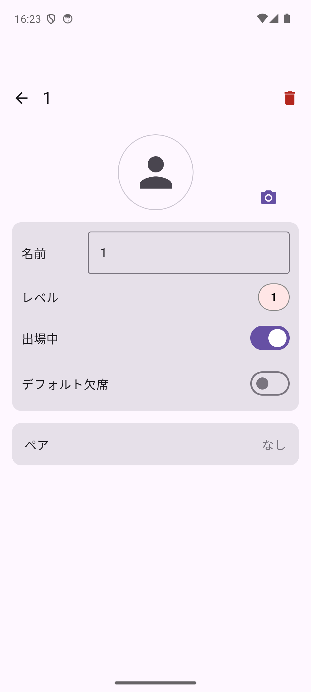
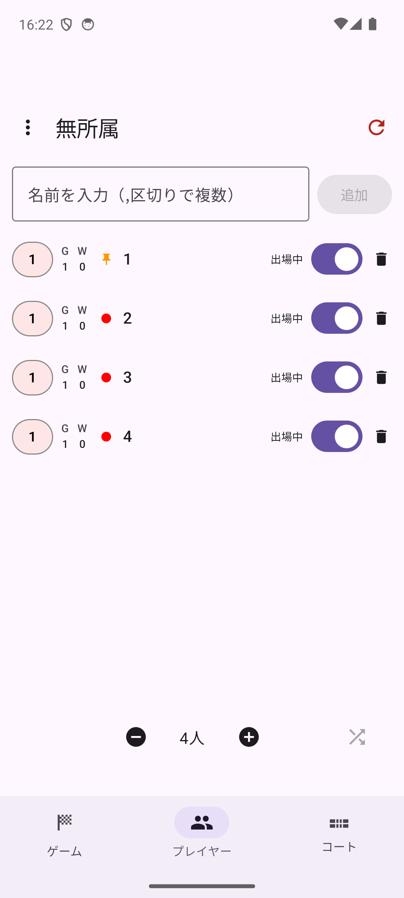
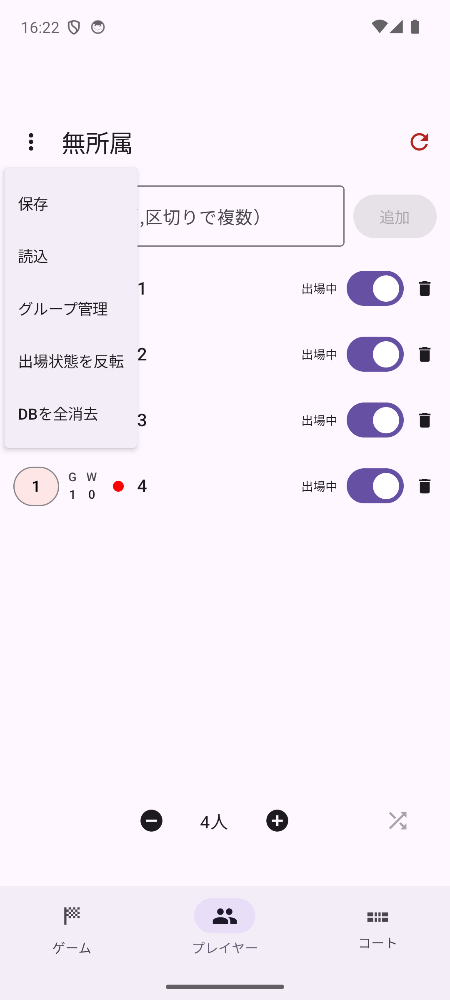
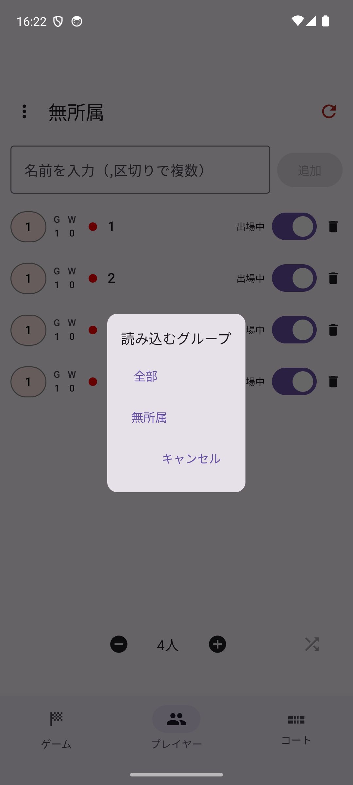

プレイヤータブでプレイヤーの行をタップすると編集画面が開きます。名前 フィールドを編集してください。フィールドをタップして入力中は、右端に表示される × ボタンで入力内容を一括消去できます。

各プレイヤーには 1・2・3 のレベルを設定できます。プレイヤータブのリスト左端にあるレベルバッジをタップするたびに 1→2→3→1 と切り替わります。編集画面の レベル からも変更できます。
レベルはコートへの割り当てに使用されます。詳しくは「高度な使い方」をご覧ください。
毎回欠席することが多いメンバーには、編集画面の デフォルト欠席 をオンにしておくと、メンバーデータを読み込んだ際に自動的に休憩状態でリストに追加されます。
編集画面の ペア セクションから、常に同じペアを組むプレイヤーを指定できます。固定されたペアはプレイヤー名の横に ♥ マーク付きで表示されます。
プレイヤータブのリストで、プレイヤー名の左に丸印が表示されます。赤丸は現在進行中の試合に出場していることを示し、グレーの丸はそれ以外（次の組み合わせ待ちや休憩中など）を示します。
丸印をタップすると、そのプレイヤーはピン留め状態になり、丸印の代わりにピンのアイコンが表示されます。ピン留めされたプレイヤーは、待ち回数に関わらず次の組み合わせで最優先に選ばれます。もう一度ピンのアイコンをタップすると、ピン留めが解除されて丸印表示に戻ります。

プレイヤー一覧の各行右端にあるゴミ箱アイコン、または編集画面右上のゴミ箱アイコンから削除できます。
プレイヤータブ左上の ⋮ メニューから以下の操作ができます。

メンバーをグループに分類して保存しておくと、曜日や練習会ごとに異なるメンバーをすばやく読み込めます。プレイヤー編集画面の グループ セクション（既存グループがある場合に表示されます）でグループを割り当ててから保存してください。
